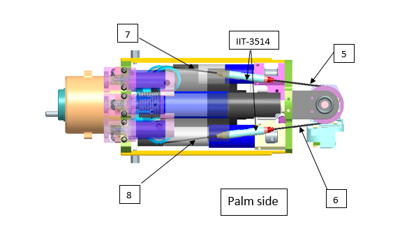
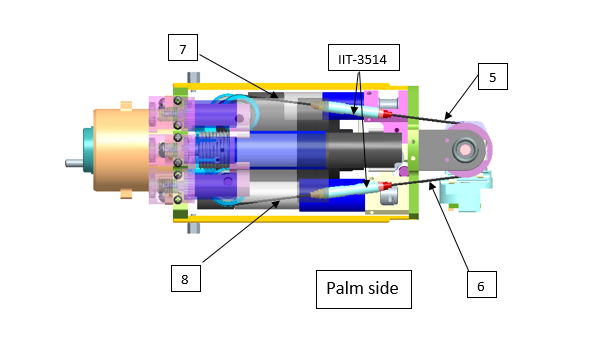

Wrist & Hand Cabling V2
1 WRIST¶
1.1 Wrist tendons' Lengths¶
Here is the list of the 10 tendons needed to build the wrist movements.

| Tendon | IITCODE | Length | Alias |
|---|---|---|---|
| 1 | 6400 | 72 mm | RC_IIT_019_G_019 |
| 2 | 6402 | 84 mm | RC_IIT_019_G_020 |
| 3 | 6404 | 101 mm | RC_IIT_019_G_021 |
| 4 | 6413 | 124 mm | RC_IIT_019_G_022 |
| 5 | 6414 | 107 mm | RC_IIT_019_G_023 |
| 6 | 6415 | 113 mm | RC_IIT_019_G_024 |
| 7 | 6416 | 112 mm | RC_IIT_019_G_025 |
| 8 | 6417 | 107mm | RC_IIT_019_G_026 |
| 9 | 6418 | 51 mm | RC_IIT_019_G_027 |
| 10 | 6419 | 43 mm | RC_IIT_019_G_028 |
1.2 WRIST MOTOR TENDONS¶
1.2.1 Location and Identification¶
From the pictures below you will be able to locate and identify the 8 tendons inside the Right Forearm building the active part of the wrist tendons.
 

From the pictures below you will be able to locate and identify the 8 tendons inside the Left Forearm building the active part of the wrist tendons.


1.2.2 Cabling¶
In the case you found out 1 of the 8 first cables of the wrist broken, here is the sequence you need to follow to restore it.
| Pictures | step by step guide |
|---|---|
|
FIRST THING FIRST: Which side of the wrist is broken? The internal (refers to cables 1 to 4) or the external one (refers to cables 5 to 8)? Can you see some visual differences? YOU may have guessed on your own, but the answer is only that the external motor is beneath the 3 proximal motors, which makes it more complicated to reach and repair. Apart from that, it is exactly identical - so to proceed we will first see how to move the proximal motors and follow up with the explanation of the tendon repair in a more generical way. If you need to repair tendons from 1 to 4 please just proceed to STEP 2 |
| STEP 1: Remove the 6 screws M1.6x5 and flip over the 3 motors to be able to access visually the motor beneath them. |
|
| STEP 2: Remove the 2 screws M2.5x10 holding the motor. From now on, you can work freely. |
|
 |
STEP 3: Remove the broken part of the cable still inside the tensioner. !!!WARNING!!! It is the utmost importance that you DO NOT MIX the 3 parts of the tensioner. ALWAYS KEEP THEM TOGETHER the main part and its 2 screwing side |
| STEP 4: At the level of the wrist pulley, just remove the broken cable and replace it : EASY for cable 5 and 6 BUT LESS EASY for cable 1 and 2, because you need to remove the mechanical part preventing you from inserting and removing the head crimp. To do so, just remove the 2 screws M2x6 and slide the block to retrieve and replace the head crimp. Once done, put back on place the block and the 2 screws. |
|
| We can now start wiring!!! | |
| STEP 5: Let's begin with the motor pulley, here is the way to wire them both (as they are perfectly identical). |
|
 |
LEFT ARM The BLUE cables for the Left Forearm are: The RED cables for the Left Forearm are: |
| RIGHT ARM The BLUE cables for the Right Forearm are: The RED cables for the Right Forearm are: |
|
| STEP 6: Put a 2 tie wraps one for each side (or cable) in order to prevent them from getting untwisted. |
|
| picture motor almost closed on support | STEP 7: Put back in place the motor with its 2 screws M2.5x10. Leave 1mm in between the motor and the support. We will cover this aspect later. |
| STEP 8: Let's wire the wrist pulleys (either for 1,2 or 5,6) Here is the detailed wiring for the left arm, please mirror it for the right arm. The wiring is quite simple. |
|
| We are finally getting to an end. Now that you know how to rewire every single one of the wrist cables you need to insert the tensioners. Let's make the example of the 4 cables 1 to 4. |
|
| STEP 9: Remove the tie wrap at the level of the motor wrist, for let's say cable 3. Open one side of the tensioner and start putting the ring, then the threaded piece of the tensioner, finish by screwing the ring onto the threaded piece. Do the exact same for the cable 1. |
|
| STEP 10: Screw both pieces into the main tensioner part - Let's say just 2 threads on both sides, just to make it hold until we tense it. |
|
| STEP 11: Repeat STEP 9 and STEP 10 with cables 2 and 4. |
|
| STEP 12: Use 2 pliers to hold on the tips of the threaded pieces' tensioner and use with any tool fitting the hole inside the main part of the tensioner AND finally screw them. !!! TIP !!! depending on how you are facing the cables just screw CW or CCW for half a turn to understand if the 2 threaded pieces are going inside the main piece or if they get out - THEY NEED TO GET IN OBVIOUSLY. |
|
| Repeat the above step on both tensioners until you get a quite nice tensing (but not super tense, this will be done right next). | |
| FINAL STEP: Tense the 2 screws that we left a bit opened on STEP 7. |
1.3 WRIST - PASSIVE TENDONS¶
1.3.1 Location and Identification¶
From the pictures below you will be able to locate and identify the 2 tendons inside both the Right Wrist and Left Wrist building the passive part of the wrist movements.
| RIGHT WRIST | LEFT WRIST |
|---|---|
 |
 |
1.3.2 Cabling¶
Here the sequence you need to follow to restore the 2 little cables from the base of the wrist - we will write down the procedure using the left arm as base pictures but use the previous pictures above to mirror the explanations.
| Pictures | step by step procedure |
|---|---|
| !!!KEEP IN MIND!!! whenever you need to replace one of the 2 cables you FIRST need to release the tensioners . CABLE 10: it is really straight forward - just put one side of the crimp of cable 10 inside the tensioner (blue circle) and put the other side inside the holding tooth. |
|
| CABLE 9: it is just a bit more complicated because you need to first remove the screw to be able to lodge the crimp inside the tensioner and put back in place the tensioner in the throat and insert the screw. |
|
| Once done: tighten the screws of both tensioners until you reach a strict tensing on the cables. |
2 HAND¶
2.1 Location¶
| IITCODE | Alias | Description |
|---|---|---|
| 1815 | CG077063 | Stainless steel micro-cable, cable construction 7x7mm, nom. diameter 0,63mm, not coated, AISI 316 |
2.2 THUMB OPPOSE¶
As usual, you will find here after the instructions for rewiring the Thump oppose joint at base of the Left Hand.
| Pictures | step by step guide |
|---|---|
| STEP 1: The only way to start correctly this wiring is to remove the palm. Please remove the 3 screws M2x6 (circled in red) inside the palm and the 2 screws M2x4 (circled in blue) at the base of the wrist. |
|
| STEP 2: We will now focus on the wiring along the pulley. Cut 50 to 60cm of ITTCODE 1815. Move with a screwdriver the pulley in order to have the hole flat horizontally. Insert the cable, divide equally the cable from part to part of the pulley. |
|
| STEP 3: DO 1 turn around the pulley CCW to go into S2 ball-bearing side 2 turns around the pulley CW to reach S0 motor side !!!TIP: You may find convenient to remove the plate to round the cable around the pulley more easily. |
|
 |
STEP 4: Insert both sides of the cable inside S2 and S0 until they sprout out from the palm side. |
| !!!!TIP: once both sides of the cables are out at the base of the palm, you may find convenient to verify the turns around the pulley ( you could use 2 pieces of foam hear plugs to prevent the cable from unwired itself) - Make sure the plate is screwed back into normal state. |
|
 |
STEP 5: The cable from S0 goes directly into hole T1. The cable from S2 makes 1 FULL TURN around the pulley before going into T2. |
| STEP 6: Use a 0.7mm hexagonal key (or screwdriver) to block the cables. |
|
| !!!TIP: you may find useful to first block one side and afterwards use a plier to exert a strong pulling of the wire to tense this other side of the cable and block it. Repeat the the same process on the other side. |
|
| !!!!CONGRATULATIONS YOU ARE DONE!!! |
2.3 FINGERS ABDUCTION¶
PREFACE: This cable is THE most complicated to replace - rewire, mainly because you need to unmount a lot of parts BUT on the other hand it is also the most reliable - You may never need to replace it.
| Pictures | step by step guide |
|---|---|
| STEP 1: remove the screw M2x6 holding the dorsum cover and turn upside down the cover from the external part. The dorsum cover should get removed. |
|
| STEP 2:The only way to start correctly this wiring is to remove the palm. Please remove the 3 screws M2x6 inside the palm (circled in red) and the 2 screws M2x4 (circled in blue) at base of the wrist. |
|
| STEP 3: remove the overall set screws. Use a 0.7mm hexagonal - screwdriver or key. |
|
| STEP 4: remove the overall remaining pieces of the broken cable before starting to restore it. Inspect inside the cage - remove the 2 screws M1.6x5. Let's get to business and Let's start wiring! |
|
| STEP 5: start wiring: 2 Full Turns (blue) CCW around the pulley and it gets out into tube T2 1 Full Turn (red) CW around the pulley and it gets out into tube T0. |
|
| !!!TIP!!! It could be a good idea to block the wiring around the pulley thx to some foam earplug or some paper. | |
 |
Here is a picture of the overall path of the cable inside the 3 tubes constituting the path of the cable. |
| STEP 6: remove every single board above the knuckle. |
|
| STEP 6a: remove the screw and flip over the board with the little chipsets. |
|
| STEP 6b: 1. Unplug every single chipset from the main board !!!TIP: Please write down with a marker the initial of the finger chipset you unplug - it sometimes a bit messy when remounting everything to find out which chipset is for which finger. 2. remove the power connector 3. remove the 3 screws (2 M1x5 and 1 M1.6x6) 4. With caution please remove the MAIS Board - on the bottom side of the board there is an inductor that sometimes got broken when removed carelessly. |
|
| STEP 6c: remove the 2 screws M1.6x6 |
|
| Let's start with wiring the cable from T2 | |
| STEP 7: Here is the picture of the routing of the cable you need to realize. To do that, it is necessary to allow the pulleys to rotate around their pin. |
|
| STEP 7a: PINKIE FINGER 1. you need to untighten ENTIRELY the axes screws on both sides of the finger (on the palm side it can be removed - pay attention that the ball bearing may fall as well, just remember to replace it when remounting - BUT REFRAIN TO REMOVE on top side - or else you will lose the center of the finger) 2. try to move the pulley along its pin until you succeed to insert the cable into it. 3. Put back on the axes screws and retighten them. |
|
| STEP 7b: RING FINGER Same 3 first steps as the Pinkie finger. 4. Finally insert the cable into the hole leading to T4. |
|
| STEP 8: Before starting to wire the base of the index finger it is really important to block the cable at the base of the pinkie finger - in this way we wont unintentionally untwine the wiring at the level of the motor pulley. 1. Insert the set-screw onto the pinkie finger and tighten it.. |
|
| Let's start wiring the index base pulley | |
| STEP 9: As for pinkie and ring fingers: 1. untighten the 2 axes screws in order to be able to move the pink (color) pulley sideways around its PIN 2. Pass the cable coming from T4 (red) inside the pulley hole. |
|
| STEP 10: 1. wire the cable from T0 (blue) 2. re-center the pinky pulley 3. put the axes screw back on. |
|
| Let's start tensing the cable | |
| STEP 11: 1. take one plier - pinch at the exit of the cable from the pinky pulley and twist it to retrieve the excess of cable which will have for consequence to tense this part of the cable - the overall fingers should get closer to each other 2. put the set-screw A and B 3. Tense the other side of the cable (blue part) the same way 4. put the set-screw C |
|
| STEP 12: Final test: 1. remove the 2 blocks (foam ear plug or paper jamming) from the pulley motor 2. use the head screw from the pulley motor to check if the fingers get opened-closed whenever you turn it CW or CCW. |
|
| IF YES -YOU ARE DONE - USE every unmounting step to put back in place every part of the hand |